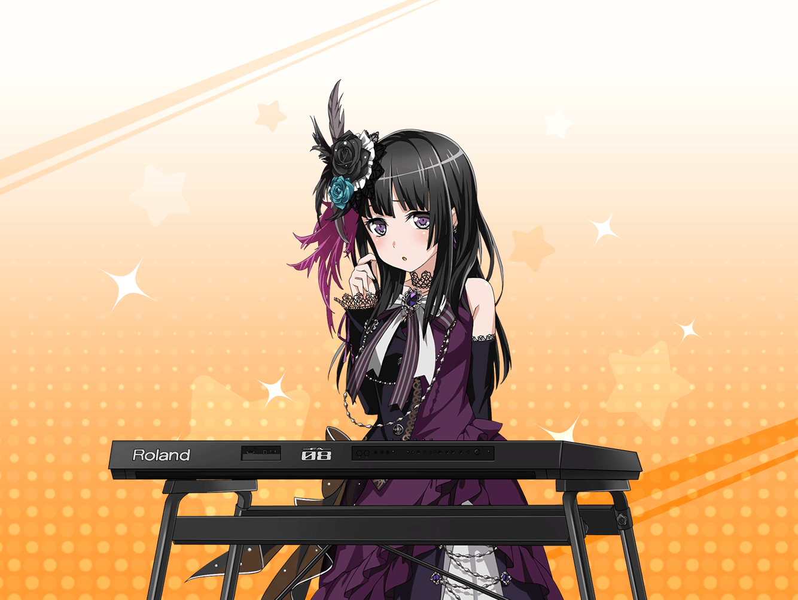

友希那
…………
燐子
（ど、どうし……よう……
友希那さん……さっきから
……ずっと……黙ってる……）
燐子
（わたしの衣装……きっと……
よくなかったんだ……）
友希那
燐子。
これすべて、あなたが作ったの？
燐子
は、は……
燐子
（き、緊張して、声……っ）
友希那
……頷いているということはそうなのね。
そう……
燐子
あ……の……！
な……直し……ます……
よ……よくないところ……っ
友希那
？
よくないなんて言っていないわ。
すごくいい出来だと思う
燐子
……へっ？
友希那
ただ、あなたは
ピアノでたくさん指を使う
燐子
は、はい……。
あ、あの、でも……練習の時間は……
ちゃんと……さぼって……ません……
友希那
Roseliaのメンバーなら当然ね。
でも……だからこそ、問題だわ
友希那
これだけの刺繍やシルエット、
相当の技術が必要だったはずよ。
あなたの指はそれに耐えられる？
燐子
わ、わたしは……全然……っ
友希那
今は、ね。
でもこれからはどう？
燐子
え……？
友希那
燐子。私はキーボードだけではなく、
あなたのデザインや
服をつくる技術も認めているの
友希那
……これからもRoseliaの衣装や、
将来的にはアートワークの
すべてをあなたに任せたい
友希那
あなたのつくるものは、私の歌を、
そしてRoseliaの音楽を完璧に形にしている。
ほかに頼める人は、そういないわ
友希那
ただそれは……楽器以外に、
相当な負担をあなたに強いることになる。
はたしてそれがいいことなのか……
燐子
わ、わたし……や、
やり……たい……っ、です！
燐子
わたし……衣装をつくっている間……
ずっとRoseliaのこと……
友希那さんの歌のこと……考えて……ました……
燐子
そしたら……もともと……好きだった
服づくりが……もっと楽しく……なって……
燐子
普段の……練習も……
この衣装で……この曲を……みんなで
演るんだって……
燐子
そう思ったら……
ますます……楽しくなって……
友希那
燐子……
友希那
わかったわ。
ただもし、少しでも辛くなったら、すぐに言って
友希那
これであなたの演奏に影響が出たら、
私の責任だから
友希那
…………
友希那
一流のアーティストは
２種類しかいないと、言われているわ
友希那
とにかく１つのことが大好きで、
それに没頭して、それしか出来ない。
音楽がないと生きていけない人間
友希那
そしてもう１種類は、
さまざまな芸術的分野の才能を持ち、
音楽とそれを合わせ、『自分の世界』を築ける人間
友希那
燐子。あなたは後者かもしれない
燐子
そ、そそ、そん……な……！
わたし……なんか……
友希那
なんかなんて自分のことを言うのは、
評価した人間に対して失礼よ
燐子
す……すみません……
友希那
あなたは相当な読書家でもある。
バンド内で一番、クリエイティブな
視点を持っているのかもしれない
燐子
（褒めて貰えるのは嬉しいけど……
全然そんなんじゃ……
って言ったら……また怒られてしまう……）
友希那
……私には……歌しかないわ。
他に、気持ちを伝え合うことなんて……
友希那
だから、この衣装をみて、
……少し、うらやましいと思った。
とっさに、何もいえなくなってしまった
友希那
そのせいで……
変に誤解させてしまったようで、ごめんなさい
燐子
い、いえ……
燐子
（完璧に見える友希那さんにも……
コンプレックスってあるんだな……）
燐子
（……褒めてもらえてうれしかったな……）